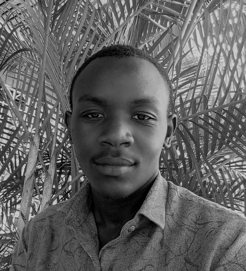

akamunyereka kevin | wdd 130

Hello! My name is Akamunyereka Kevin, and I am from Uganda. I am passionate about technology and personal development, with a strong interest in web development. I enjoy building and designing websites, and I am currently working on developing my own to showcase my skills and projects. Outside of technology, I am also an avid football player, which has taught me teamwork, discipline, and perseverance—qualities I bring into my professional and personal life. My goal is to continue growing my expertise in web development, create impactful digital solutions, and build a successful career in technology.